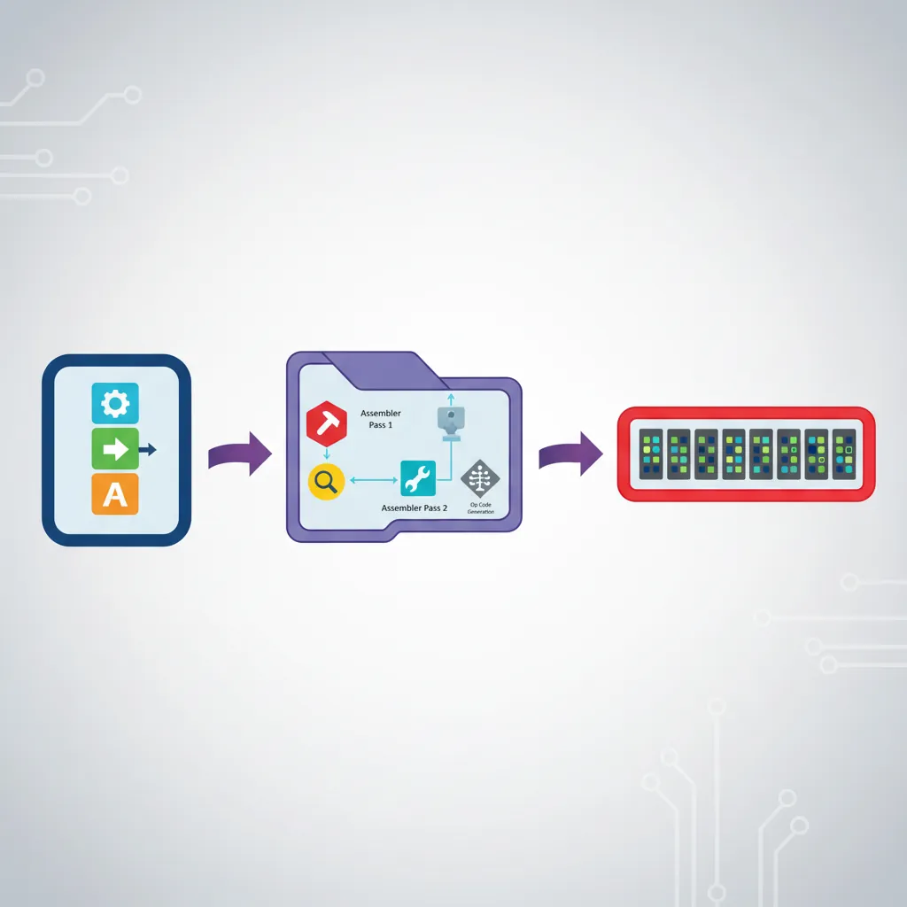
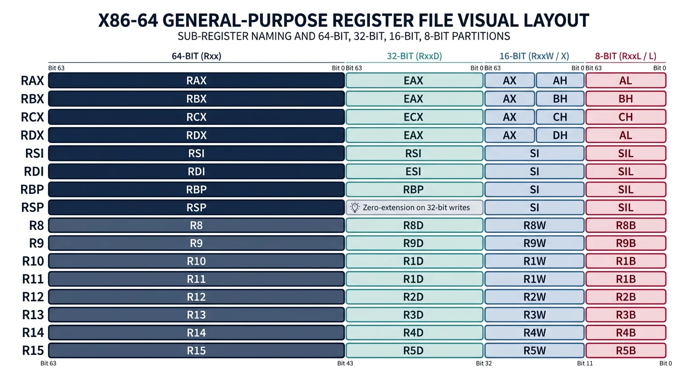
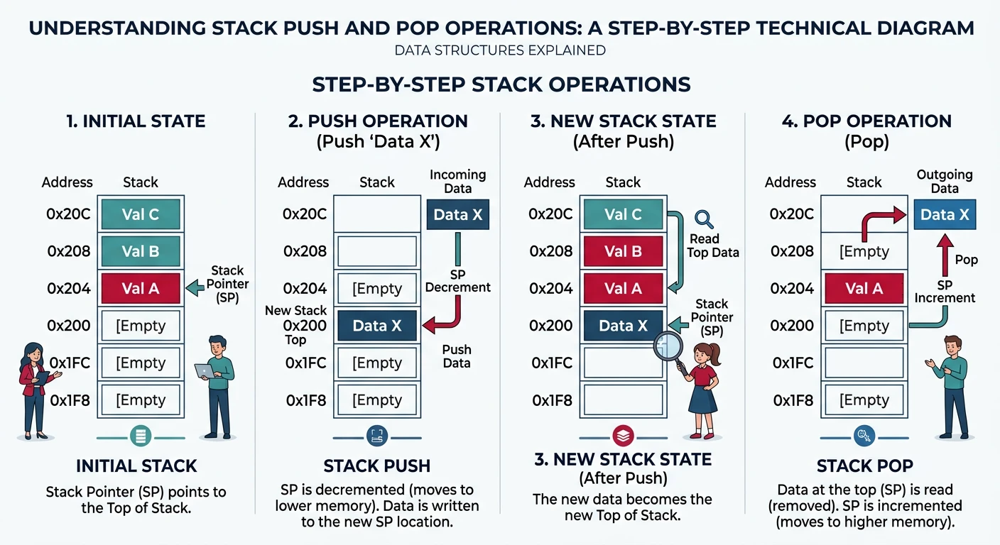
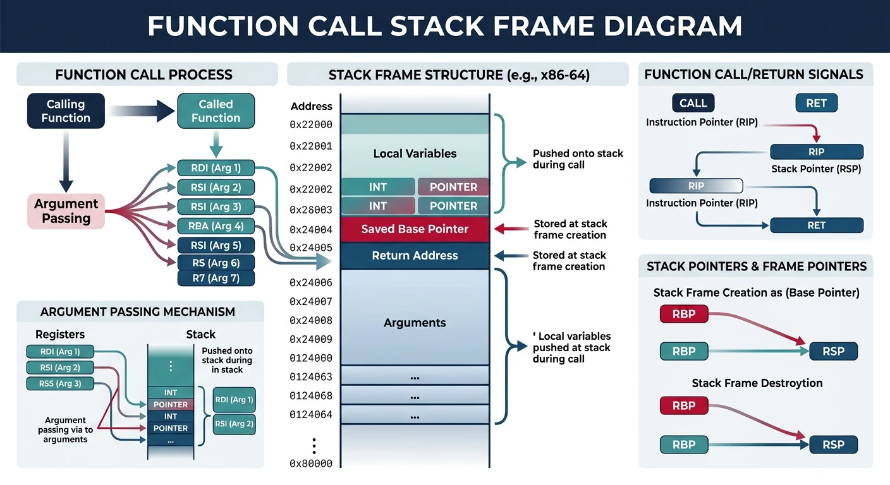

We use cookies to enhance your browsing experience, serve personalized content, and analyze our traffic.
By clicking "Accept All", you consent to our use of cookies. See our
Privacy Policy
for more information.
Assembly language provides a human-readable representation of machine code—the binary instructions that processors actually execute. Understanding assembly is essential for low-level debugging, performance optimization, and systems programming.

From assembly mnemonics to binary machine code: the translation process
Series Context: This is Part 4 of 24 in the Computer Architecture & Operating Systems Mastery series. Building on ISA concepts, we now learn to write and read assembly code.
While high-level languages abstract away hardware details, assembly gives you direct control over the CPU. Every line translates to (usually) one machine instruction.
The Language Hierarchy
Concept Map
High-level → Assembly → Machine Code → Hardware
C/Python: Assembly: Machine Code: CPU Action:
───────── ───────── ──────────── ───────────
x = a + b MOV EAX, [a] 8B 45 F8 Load from memory
ADD EAX, [b] 03 45 FC Add from memory
MOV [x], EAX 89 45 F4 Store to memory
Each level adds abstraction, hiding complexity from the programmer.
Why Learn Assembly?
Debugging — Understand crash dumps and core files
Performance — Identify bottlenecks at the instruction level
Registers are the CPU's fastest storage—tiny but incredibly fast memory cells built directly into the processor. Understanding registers is fundamental to assembly programming.

The x86-64 register file: general-purpose registers and their sub-register naming scheme
Important: Writing to a 32-bit register (like EAX) automatically zeros the upper 32 bits of the corresponding 64-bit register (RAX). Writing to 8-bit or 16-bit parts does NOT zero upper bits!
Special Registers
Special Purpose Registers:
┌──────────────┬─────────────────────────────────────────────────────────┐
│ Register │ Purpose │
├──────────────┼─────────────────────────────────────────────────────────┤
│ RIP │ Instruction Pointer - address of NEXT instruction │
│ │ Cannot be directly modified (use JMP, CALL, RET) │
├──────────────┼─────────────────────────────────────────────────────────┤
│ RSP │ Stack Pointer - top of the stack │
│ │ Modified by PUSH, POP, CALL, RET │
├──────────────┼─────────────────────────────────────────────────────────┤
│ RBP │ Base Pointer - base of current stack frame │
│ │ Used to access function parameters and locals │
├──────────────┼─────────────────────────────────────────────────────────┤
│ RFLAGS │ Status flags - result of operations (see below) │
└──────────────┴─────────────────────────────────────────────────────────┘
Flags Register (RFLAGS)
RFLAGS Register - Status and Control Flags:
Bit: │ 11│ 10│ 9│ 8│ 7│ 6│ 5│ 4│ 3│ 2│ 1│ 0│
├───┼───┼───┼───┼───┼───┼───┼───┼───┼───┼───┼───┤
Flag: │ OF│ DF│ IF│ TF│ SF│ ZF│ -│ AF│ -│ PF│ -│ CF│
Key Flags:
┌──────┬────────────────────┬─────────────────────────────────────────┐
│ Flag │ Name │ Set When... │
├──────┼────────────────────┼─────────────────────────────────────────┤
│ ZF │ Zero Flag │ Result is zero │
│ SF │ Sign Flag │ Result is negative (MSB = 1) │
│ CF │ Carry Flag │ Unsigned overflow/borrow │
│ OF │ Overflow Flag │ Signed overflow │
│ PF │ Parity Flag │ Result has even number of 1 bits │
└──────┴────────────────────┴─────────────────────────────────────────┘
Example: SUB EAX, EBX (EAX = EAX - EBX)
If result is 0: ZF=1, SF=0
If result is -5: ZF=0, SF=1
If unsigned overflow occurred: CF=1
If signed overflow occurred: OF=1
Flags in Action: Conditional Jumps
Assembly Example
; Compare and branch
CMP EAX, EBX ; Computes EAX - EBX, sets flags, discards result
; Unsigned comparisons (use CF and ZF)
JA label ; Jump if Above (CF=0 AND ZF=0)
JB label ; Jump if Below (CF=1)
JE label ; Jump if Equal (ZF=1)
JNE label ; Jump if Not Equal (ZF=0)
; Signed comparisons (use SF, OF, and ZF)
JG label ; Jump if Greater (signed)
JL label ; Jump if Less (signed)
JGE label ; Jump if Greater or Equal
JLE label ; Jump if Less or Equal
Stack Operations
The stack is a region of memory that grows downward (from high to low addresses). It's used for function calls, local variables, and saving registers.

Stack push and pop operations showing stack pointer movement through memory
Push & Pop
PUSH and POP Operations:
PUSH RAX: POP RAX:
───────── ────────
1. RSP = RSP - 8 1. RAX = [RSP]
2. [RSP] = RAX 2. RSP = RSP + 8
Before PUSH: After PUSH: After POP:
Higher Addresses Higher Addresses Higher Addresses
│ │ │
│ │ │
├─────────┤ ├─────────┤ ├─────────┤
RSP►│ old top │ │ old top │ RSP►│ old top │
├─────────┤ RSP►├─────────┤ ├─────────┤
│ │ │ RAX │ │ (old) │
│ │ ├─────────┤ │ │
Lower Addresses Lower Addresses Lower Addresses
Stack grows DOWN (toward lower addresses)!
Stack Frames
Each function call creates a stack frame (also called activation record) containing:
Stack Frame Structure (x86-64 System V ABI):
Higher Addresses
│
├─────────────────┤
│ Caller's Frame │
├─────────────────┤
│ Return Address │ ← Pushed by CALL instruction
├─────────────────┤
RBP ───►│ Saved RBP │ ← Points to caller's RBP
├─────────────────┤
│ Local var 1 │ ← RBP - 8
├─────────────────┤
│ Local var 2 │ ← RBP - 16
├─────────────────┤
│ Local var 3 │ ← RBP - 24
├─────────────────┤
│ (padding/align) │
├─────────────────┤
RSP ───►│ (stack top) │
│ │
Lower Addresses
Function Prologue (setup stack frame):
push rbp ; Save caller's base pointer
mov rbp, rsp ; Set up our base pointer
sub rsp, 32 ; Allocate space for locals
Function Epilogue (cleanup):
mov rsp, rbp ; Deallocate locals
pop rbp ; Restore caller's base pointer
ret ; Return to caller
Local Variables
Accessing Local Variables:
C function:
int example(int a, int b) {
int x = 10; // Local variable
int y = 20; // Local variable
return x + y + a + b;
}
Assembly (x86-64 System V):
example:
push rbp
mov rbp, rsp
sub rsp, 16 ; Space for 2 ints (with alignment)
; a is in EDI, b is in ESI (first 2 integer args)
mov DWORD PTR [rbp-4], edi ; Save a
mov DWORD PTR [rbp-8], esi ; Save b
mov DWORD PTR [rbp-12], 10 ; x = 10
mov DWORD PTR [rbp-16], 20 ; y = 20
mov eax, [rbp-12] ; Load x
add eax, [rbp-16] ; + y
add eax, [rbp-4] ; + a
add eax, [rbp-8] ; + b
leave ; mov rsp,rbp; pop rbp
ret
Calling Conventions
A calling convention defines how functions receive arguments and return values, and which registers must be preserved across calls.

Stack frame layout during a function call: arguments, return address, saved registers, and locals
cdecl Convention (32-bit x86)
cdecl Calling Convention (Legacy 32-bit):
┌────────────────────────────────────────────────────────────────┐
│ Arguments: Pushed right-to-left onto stack │
│ Return value: EAX (or EAX:EDX for 64-bit values) │
│ Caller saves: EAX, ECX, EDX (can be trashed) │
│ Callee saves: EBX, ESI, EDI, EBP (must preserve) │
│ Stack cleanup: Caller cleans up arguments │
└────────────────────────────────────────────────────────────────┘
Example: result = add(5, 3)
push 3 ; Second argument (right to left)
push 5 ; First argument
call add ; Call the function
add esp, 8 ; Caller cleans stack (2 args × 4 bytes)
mov [result], eax
System V AMD64 ABI (64-bit Linux/macOS)
System V AMD64 Calling Convention:
┌───────────────────────────────────────────────────────────────────────┐
│ Integer/pointer arguments (in order): │
│ 1st: RDI 2nd: RSI 3rd: RDX 4th: RCX 5th: R8 6th: R9 │
│ Additional arguments pushed right-to-left on stack │
├───────────────────────────────────────────────────────────────────────┤
│ Floating-point arguments: XMM0-XMM7 │
├───────────────────────────────────────────────────────────────────────┤
│ Return value: RAX (integer), XMM0 (float) │
│ For 128-bit: RAX:RDX │
├───────────────────────────────────────────────────────────────────────┤
│ Caller-saved (volatile): RAX, RCX, RDX, RSI, RDI, R8-R11 │
│ Callee-saved (preserved): RBX, RBP, R12-R15 │
├───────────────────────────────────────────────────────────────────────┤
│ Stack alignment: 16-byte aligned before CALL │
│ Red zone: 128 bytes below RSP usable without adjusting RSP │
└───────────────────────────────────────────────────────────────────────┘
Example: result = compute(a, b, c, d, e, f)
; Arguments: a=1, b=2, c=3, d=4, e=5, f=6
mov edi, 1 ; a → RDI
mov esi, 2 ; b → RSI
mov edx, 3 ; c → RDX
mov ecx, 4 ; d → RCX
mov r8d, 5 ; e → R8
mov r9d, 6 ; f → R9
call compute
; Result in RAX
Stack Alignment Warning: The stack must be 16-byte aligned BEFORE the CALL instruction. Since CALL pushes an 8-byte return address, your function should ensure the stack is 8-mod-16 before calling other functions!
Windows x64 Calling Convention
Windows x64 Calling Convention:
┌───────────────────────────────────────────────────────────────────────┐
│ Integer/pointer arguments (in order): │
│ 1st: RCX 2nd: RDX 3rd: R8 4th: R9 │
│ Additional arguments pushed right-to-left on stack │
│ (Different from System V!) │
├───────────────────────────────────────────────────────────────────────┤
│ Shadow space: Caller must reserve 32 bytes above return address │
│ (Even if function has fewer than 4 arguments!) │
├───────────────────────────────────────────────────────────────────────┤
│ Callee-saved: RBX, RBP, RDI, RSI, R12-R15, XMM6-XMM15 │
└───────────────────────────────────────────────────────────────────────┘
Stack layout for Windows x64:
├─────────────┤
│ arg 5+ │ ← If more than 4 args
├─────────────┤
│ Shadow[3] │ ← Reserved for R9
├─────────────┤
│ Shadow[2] │ ← Reserved for R8
├─────────────┤
│ Shadow[1] │ ← Reserved for RDX
├─────────────┤
│ Shadow[0] │ ← Reserved for RCX
├─────────────┤
RSP ───►│ Return addr │
├─────────────┤
Practical Assembly Examples
Assembly instruction execution: the fetch-decode-execute cycle in action
x86-64 Assembly Examples
; Example 1: Simple function that adds two numbers
; int add(int a, int b) { return a + b; }
global add
section .text
add:
; a is in EDI, b is in ESI (System V)
mov eax, edi ; Copy a to EAX
add eax, esi ; EAX = a + b
ret ; Return value in EAX
; Example 2: Loop - sum array elements
; int sum_array(int* arr, int count)
global sum_array
section .text
sum_array:
; RDI = arr pointer, ESI = count
xor eax, eax ; sum = 0 (XOR is fast way to zero)
test esi, esi ; Check if count == 0
jle .done ; If count <= 0, return 0
.loop:
add eax, [rdi] ; sum += *arr
add rdi, 4 ; arr++ (4 bytes per int)
dec esi ; count--
jnz .loop ; Continue if count != 0
.done:
ret
; Example 3: String length (like strlen)
; size_t my_strlen(const char* str)
global my_strlen
section .text
my_strlen:
; RDI = str pointer
mov rax, rdi ; Copy pointer
.loop:
cmp BYTE [rax], 0 ; Is current char null?
je .done ; If yes, exit
inc rax ; Move to next char
jmp .loop ; Continue
.done:
sub rax, rdi ; length = end - start
ret
ARM64 Assembly Examples
; ARM64 Example: Add two numbers
; int add(int a, int b)
.global add
.text
add:
// w0 = a, w1 = b (first two args)
add w0, w0, w1 // w0 = a + b
ret // Return (result in w0)
; ARM64 Example: Sum array
; int sum_array(int* arr, int count)
.global sum_array
.text
sum_array:
// x0 = arr, w1 = count
mov w2, #0 // sum = 0
cbz w1, .done // If count == 0, done
.loop:
ldr w3, [x0], #4 // Load *arr, then arr += 4
add w2, w2, w3 // sum += *arr
subs w1, w1, #1 // count-- and set flags
bne .loop // If count != 0, continue
.done:
mov w0, w2 // Return sum
ret
; ARM64 Conditional execution
; max = (a > b) ? a : b
.global max
max:
cmp w0, w1 // Compare a and b
csel w0, w0, w1, gt // Select a if greater, else b
ret
Debugging Assembly with GDB
Essential GDB Commands for Assembly
Debugging
# Compile with debug symbols
gcc -g -o program program.c
# Start GDB
gdb ./program
# Useful commands:
(gdb) break main # Set breakpoint at main
(gdb) run # Start program
(gdb) disassemble # Show assembly of current function
(gdb) disassemble main # Show assembly of specific function
(gdb) info registers # Show all register values
(gdb) print $rax # Print specific register
(gdb) print/x $rsp # Print in hexadecimal
(gdb) x/10i $rip # Examine 10 instructions from RIP
(gdb) x/4xg $rsp # Examine 4 quad words at RSP
(gdb) x/s $rdi # Examine string at RDI
(gdb) stepi # Step one instruction
(gdb) nexti # Step one instruction (skip calls)
(gdb) finish # Run until function returns
(gdb) layout asm # Show assembly view
(gdb) layout regs # Show registers + source
Exercises
Practice Exercises
Hands-On
Register Trace: What's in RAX after: mov eax, -1?
Stack Analysis: Draw the stack after executing:
push 1
push 2
push 3
pop rax
pop rbx
Write Assembly: Implement int abs(int x) in x86-64 assembly
Calling Convention: How would you call printf("%d %d", 10, 20) in System V ABI?
Reverse Engineering: What does this code do?
xor eax, eax
.loop:
cmp byte [rdi], 0
je .done
inc eax
inc rdi
jmp .loop
.done:
ret
Conclusion & Key Takeaways
You now have a solid foundation in assembly language—from registers and stack operations to calling conventions used in real systems.
What You've Learned:
Registers — General purpose (RAX-R15), special (RIP, RSP, RBP), and flags